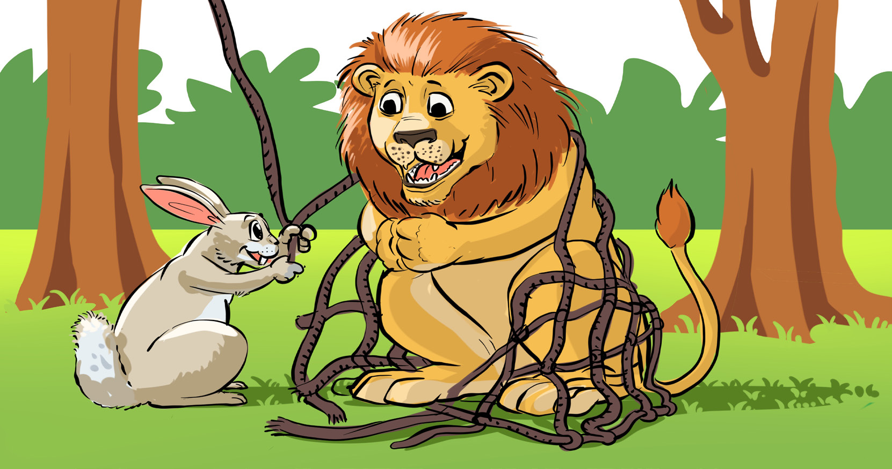

Sisi sote ni muhimu, wiki kukamilisha,
Hakuna haja kubishana, yatupasa kuungana,
Tushikamane kwa pamoja, wiki kukamilisha,
Binadamu wanatutegemea, siku zote kuzifurahia.
Zoezi la nne
- 1. Wiki ina siku ngapi?
- 2. Taja majina ya siku za wiki.
- 3. Kuna umuhimu gani wa kujifunza siku za wiki?
- 4. Eleza kazi unazofanya kila siku katika wiki.
Shughuli ya nne
Tamba na mwenzako ngonjera uliyoisoma.
Kusoma hadithi
Soma hadithi hii kwa sauti na kwa usahihi:
Simba na Sungura

79